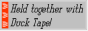
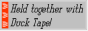
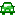

ABOUT ME
Hello, my name is WiiCHiCKEN. The username I use comes from when my friend sent me this picture with just the caption "wii chicken":

The styilization of my name (capitilizing every letter except for "i") was inspired by "LiDAR", because I thought it looked cool.
I am from America.
I have been interested in technology for almost my whole life, ever since I got my first Windows XP laptop when I was, I don't know, 7? I used that laptop to make PowerPoint presentations, check the weather online, read my email, listen to the huge iTunes library my father gave me (remember when you didn't have to pay for iTunes Radio?), watch Minecraft videos, and look at Magic: The Gathering cards. Unrestricted internet access did not completely ruin me as a person, like it did for everyone else.

 



HOBBiES
Unfourtanately, I don't have too many hobbies. I was born with aspburgers (I have spelled it assburgers my whole life), and as apart of that, I feel like I don't really have many hobbies, except for ones I picked up when I was young.
coding - Kind of. I got started with programming with Scratch when I was young. I made hundreds of projects, and then for some reason deleted my account.
Eventually, I was gifted a Python tutorial book, but I never went far with it. I should probably start learning it, or C++. I want to learn JavaScript so I can make more effects.
 maps - I have always been obsessed with maps and GPS. In fact, I got a GPS for Christmas one year and I liked it so much I ended up locking myself out of it because I brute forced the lock pin.
listening to music - I really like listening to music. I try to listen to a large variety of genres. You can check my last.fm or Rate Your Music if you want to, or you can view the music pages I have on this site
FAVORiTES
you can find more of my interests on the interests page. these aren't in any particular order, btw.
GAMES
- OneShot
- Fortnite
- Saints Row 3
- WarioWare Gold
- Splatoon 3
switch friend code: SW-6656-0767-2100
SPLATOON 3 STATS
Inkopolis Square's Weakness
cringePoop
#1088
Level: 65
Rank: S (Highest: S+0)
Inked: 3,100,000p
Wins: 1,300
Badges: 98
Shifts: 400
Xtrawaves Cleared: 4
Golden Eggs: 20,000
Power Eggs: 900,000
Points: 70,000p
Updated: September 1, 2025
MUSiC
ARTiSTS
SONGS
you can also find an archive of my favorite songs on my last.fm obsessions page or on this site's favorite songs page.
- untitled 05 | 09.21.2014. - Kendrick Lamar
- Responsibility - Andor
- Sum of my Cares - The Long Faces
- Sunflower - Rex Orange County
- Melancholyism. - Super Whatevr
- Paint Me Silver - Pond
- Giving Bad People Good Ideas - Death Grips
FOLLOW ME
in case you need more of me in your life, for some reason
CONTACT ME
- discord: @bbctwo (wiichicken#0040)
- email: vimeoofficial@gmail.com
- neocities page
THiS SiTE
Cookie Clicker was the reason I discovered Neocities. The old school I attended blocked Cookie Clicker, but someone hosted the whole game on Neocities, albeit an older version. I got bored and decided to check the homepage of Neocities, and tried making another page for students to play games on at school. That page hasn't been lost to time, but rather lost to memory.
Recently I started getting really into website designing again. I found it is much more fun being able to have control of almost everything instead of just posting pictures and videos to a static feed. I hope that the content of my site makes up for the lack of effects and styling on it
I am hoping that soon this site can become a hub for my works and projects. I don't want things to be consistent across pages, I want it to be obvious how my design style has evolved (or devolved) over time (i have not been that good in doing this).
As much as I don't like big tech and social media, this site wasn't made as a big middle finger towards them. Instead, this site is a creation of my own. It's something that I can look at and say "I made this" with pride. I feel alot of people forget about that when they start making their own websites. Making websites as protest is cool, but making websites for fun is also cool. I highly recommend you read the sadgrl.online Internet Manifesto, as I strongly agree with what it says.

this site is %98.9 hand coded*
*this statistic probably isn't accurate
NEVER ASKED QUESTiONS
What do you use to draw?
I still have yet to decide what app I wanna commit to on computer, but I use a modified version of ibisPaint so I don't have to pay, because I'm cheap. On my phone I use the same app. oh yeah also recently i started using krita and i use aseprite in combination with it
What did you make this site in?
At first I made this site in the Neocities editor, but now I mainly use Visual Studio code. I code in a lot of places at once, so when I'm not on my laptop, I'm using the browser version.
What computer do you use?
I use a Lenovo P52 ThinkPad. Yep. If I'm feeling daring, I use a T450 running Chrome OS Kubuntu, however this is more for light browsing and schoolwork.
What phone do you use?
I don't actually have a phone. Whenever I do phone stuff, I use the infotainment on my car's dashboard, as it runs Android. If the car is in repair, I use Android Studio.
How do you pick colors?
First I think of a theme color or color combination, usually revolving around a red and blue gradient. I do this using my brain. After that, I find a color and put it into the Material Theme Builder. I use this to make the background and text colors more harmonized.
Why do you have a NAQ section?
I am always going through what the kids call "writers block", so writing useless stuff like this makes it look like I have done work
Why wiggle.monster?
Because it's funny. No other reason.
Why do some pages have Google Analytics tags?
I am data obsessed, so I used to add Google Analytics tags to my pages. I don't really care about that anymore, so I stopped adding them. However, some pages may still have them, and I don't feel like going through to find what ones still do . Just use uBlock Origin or something, I dunno.
I am your friend. How can I get in your friend section?
Hello, friend. Just let me know. However, I may not put your website if you don't have a 88x31 button or if your site is basically just a linktree/caard. Just add a page with a marquee that says "poop" or something and maybe I will consider it
Where's your landing page?
A landing page? In THIS economy? sorry i just don't really care enough for that and i dont think i have anything on my site where i would need to warn you before viewing (ex. autoplaying music)
How many slices of bread do you eat a day?
I used to average 4, 6 on a bad day, but now I only average 2.
what up what you doing
just watching my game. You?
do yall got lap tops
you mean, the players? Do they have laptops?